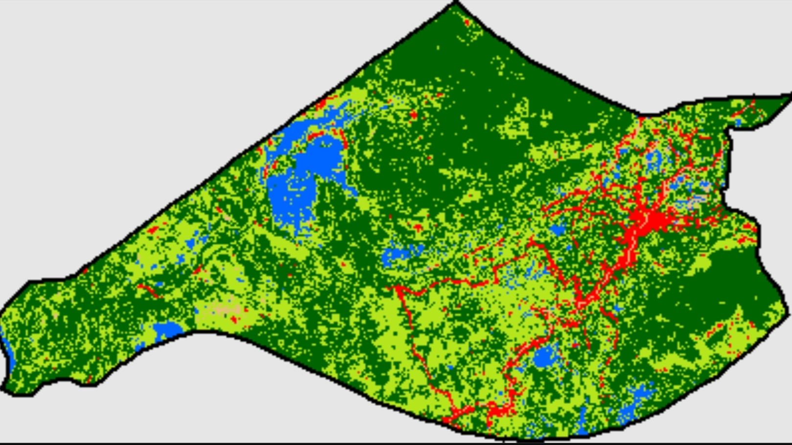
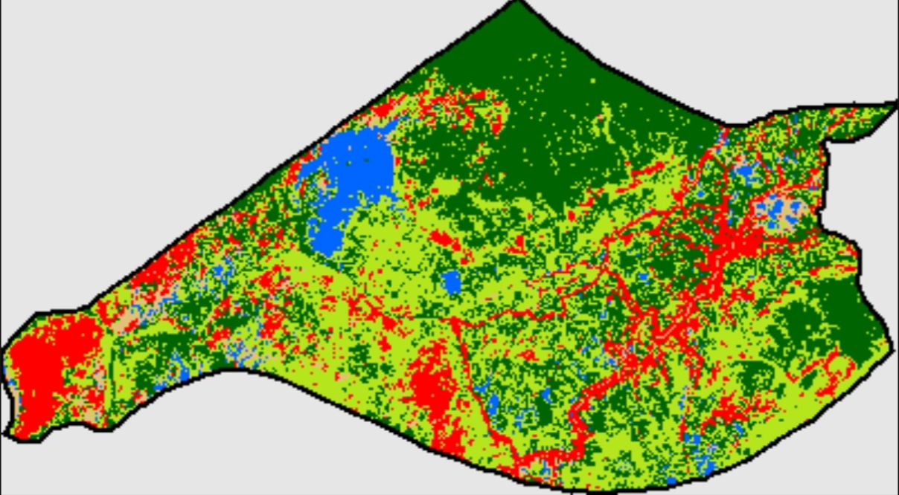
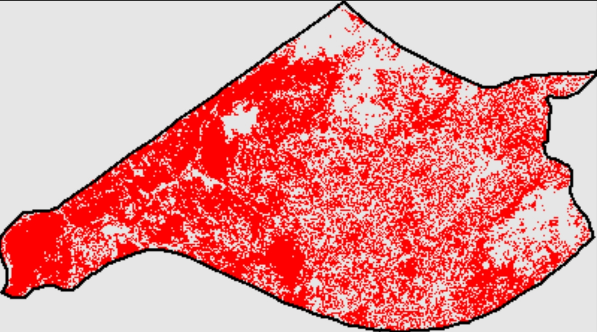
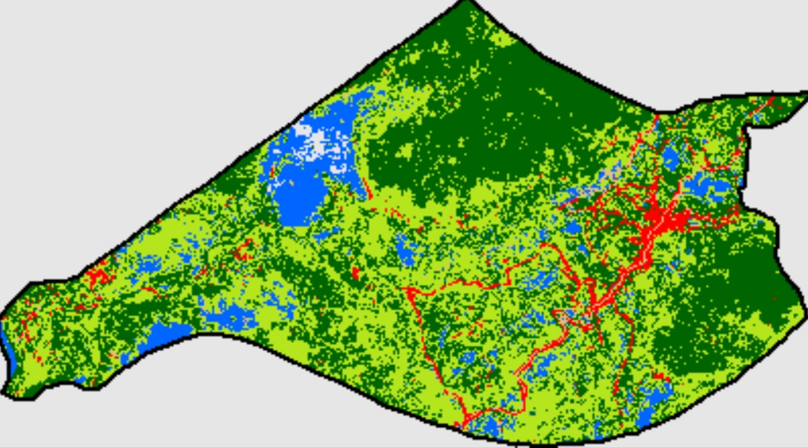
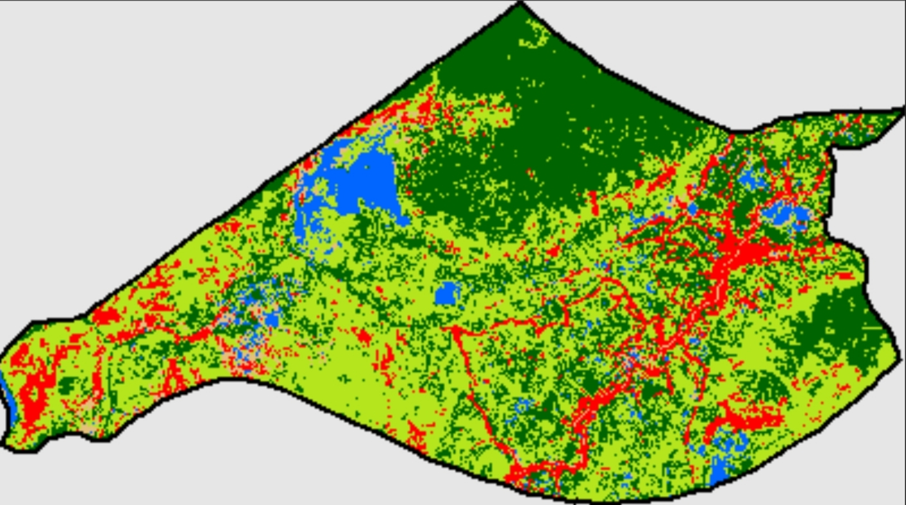
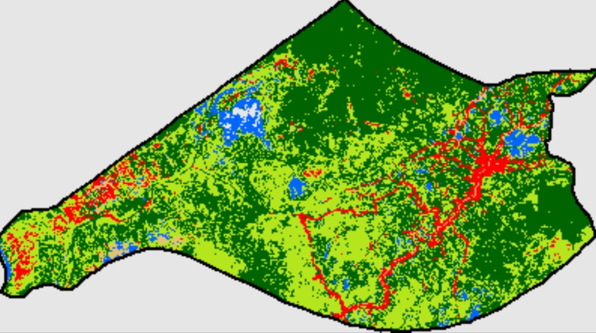
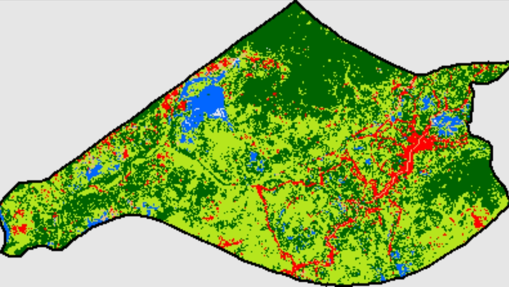

Peta tutupan lahan 2021 dan 2026
Bandingkan kedua peta. Area yang berubah kelas di antara dua tahun itu ditandai merah pada peta perubahan di bawahnya.



- Badan air
- Lahan terbangun
- Lahan terbuka
- Vegetasi rendah / sawah
- Vegetasi rapat / hutan
Luas per kelas (hektar)
Baris berlatar kuning adalah kelas yang angkanya tidak stabil antartahun. Jangan dibaca sebagai perubahan nyata.
Komposisi per tahun
Tinggi tiap batang adalah total wilayah (sekitar 87.490 ha). Yang berubah hanya pembagian warnanya.
- Badan air
- Lahan terbangun
- Lahan terbuka
- Vegetasi rendah / sawah
- Vegetasi rapat / hutan
Peta semua tahun




Keterbatasan
Baca angka perubahan dengan hati-hati. Hasil ini cocok sebagai gambaran awal, bukan dasar keputusan atau pelaporan resmi tanpa validasi lapangan.
- Lahan terbangun tidak stabil. Luasnya naik turun dari sekitar 3.800 ha (2021) ke 14.588 ha (2023), turun ke sekitar 5.100 ha (2024-2025), lalu 23.516 ha (2026). Lonjakan sebesar ini tidak masuk akal sebagai pembangunan nyata, sehingga angka perubahan +517% adalah artefak klasifikasi.
- Label latih bukan data lapangan. Sampel latih diambil otomatis dari ESA WorldCover 2021, bukan survei. Akurasi yang dihitung hanya mengukur kecocokan dengan WorldCover, dan model mewarisi kesalahan peta itu.
- Model dilatih dari satu tahun (2022). Pada tahun dengan kondisi berbeda, misalnya kemarau panjang El Niño 2023, lahan kering atau terbuka bisa salah dikenali sebagai terbangun.
- Rawa musiman. Luas badan air dan vegetasi bergantung pada tinggi muka air saat citra diambil. Perbedaan antartahun sebagian besar mencerminkan musim, bukan perubahan permanen.
- Resolusi 30 m. Rumah, jalan kecil, dan sawah bercampur dalam satu piksel, sehingga kelas terbangun sulit dipisahkan.
- Citra 2021 lebih sedikit. Landsat 9 baru beroperasi sejak akhir 2021, jadi 2021 memakai gabungan Landsat 8 dan 9 dengan 18 citra pada Juni-Oktober (tahun lain 42-55). Tahun 2026 juga belum setahun penuh.
- Batas wilayah dari FAO GAUL 2015, bukan batas resmi BIG, sehingga luas total (sekitar 87.490 ha) bisa sedikit berbeda dari angka administratif.
Angka yang relatif lebih bisa dipercaya adalah urutan besar kelas dominan: vegetasi rendah/sawah dan vegetasi rapat/hutan menutup sebagian besar wilayah di semua tahun.
Metode
Ringkasan alur analisis
- Data: Landsat 8 dan 9 Collection 2 Level 2 (reflektansi permukaan), komposit median Juni-Oktober tiap tahun, celah diisi komposit setahun penuh.
- Masking awan dan bayangan memakai band QA_PIXEL.
- Fitur: band biru, hijau, merah, NIR, SWIR1, SWIR2, serta NDVI, MNDWI, NDBI.
- Label latih: ESA WorldCover v200 (2021) dipetakan ke 5 kelas, 500 titik acak per kelas dari komposit 2022, dibagi 70% latih dan 30% uji.
- Pengklasifikasi: Random Forest (150 pohon).
- Luas dihitung per piksel (30 m) dalam hektar.